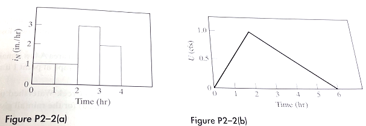
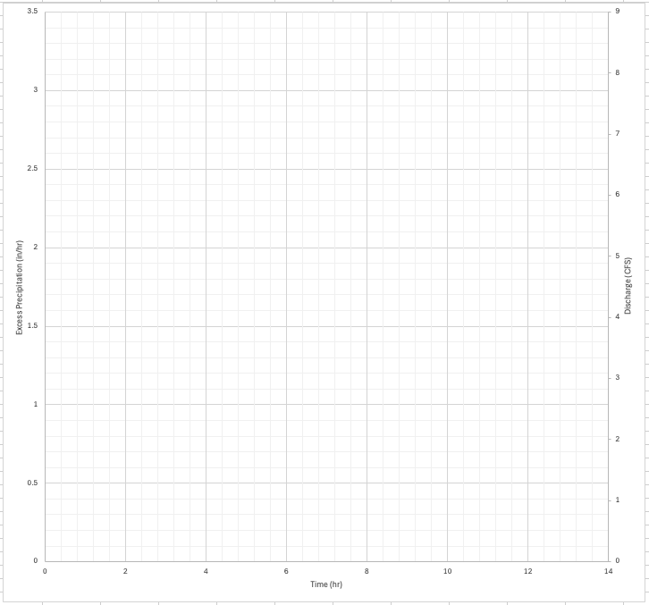
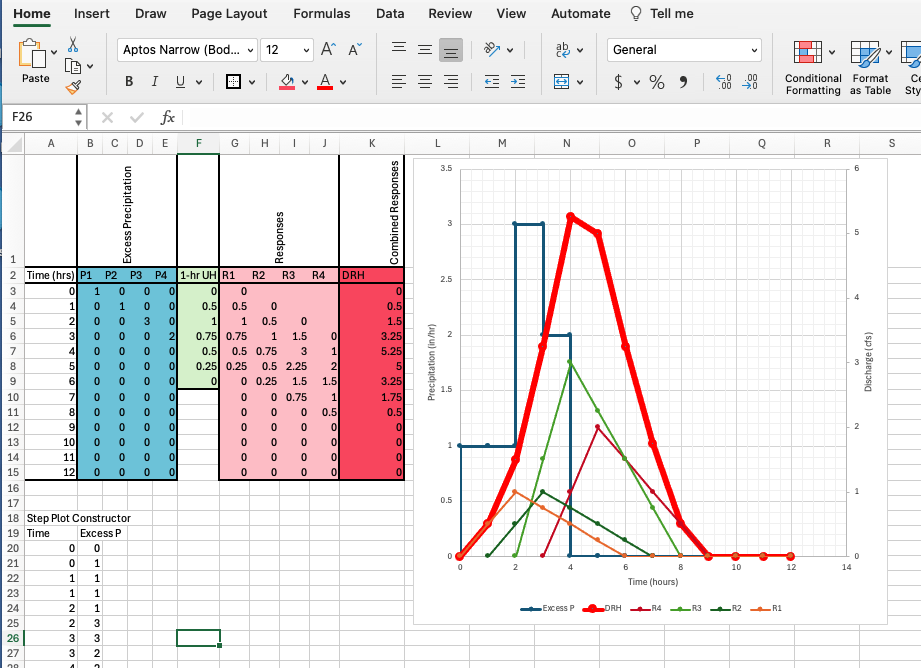
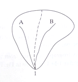
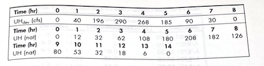
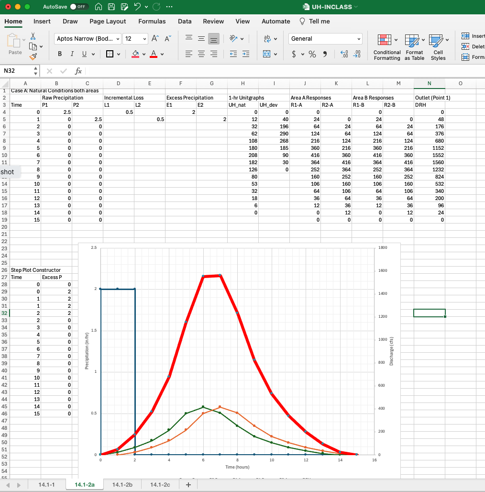
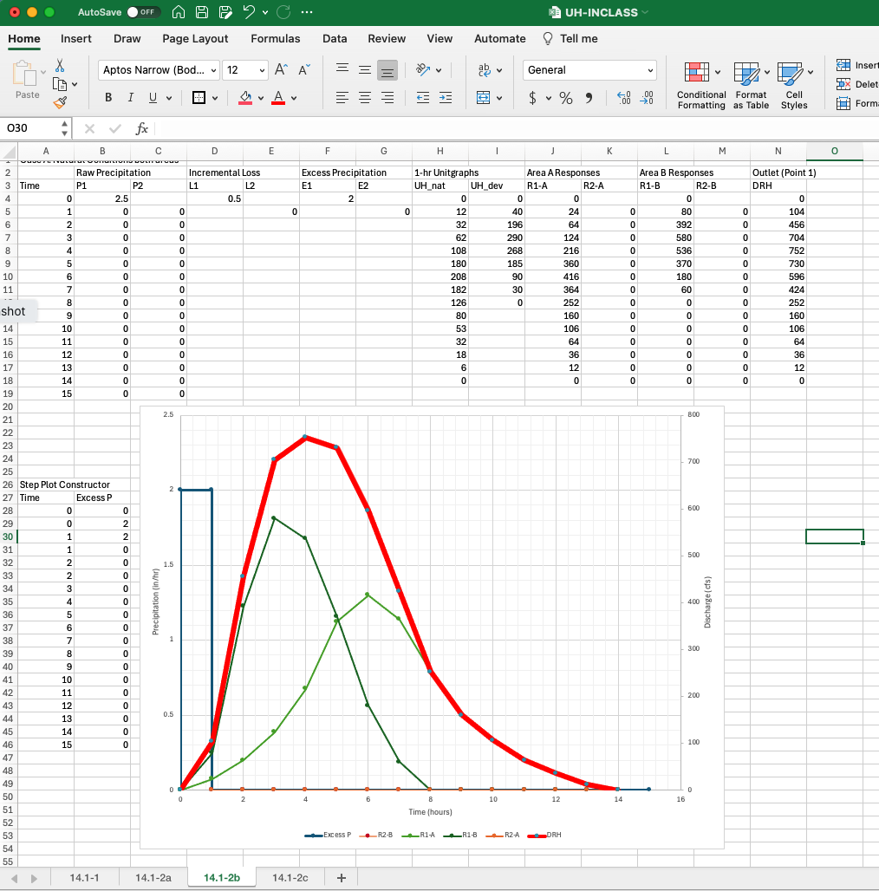
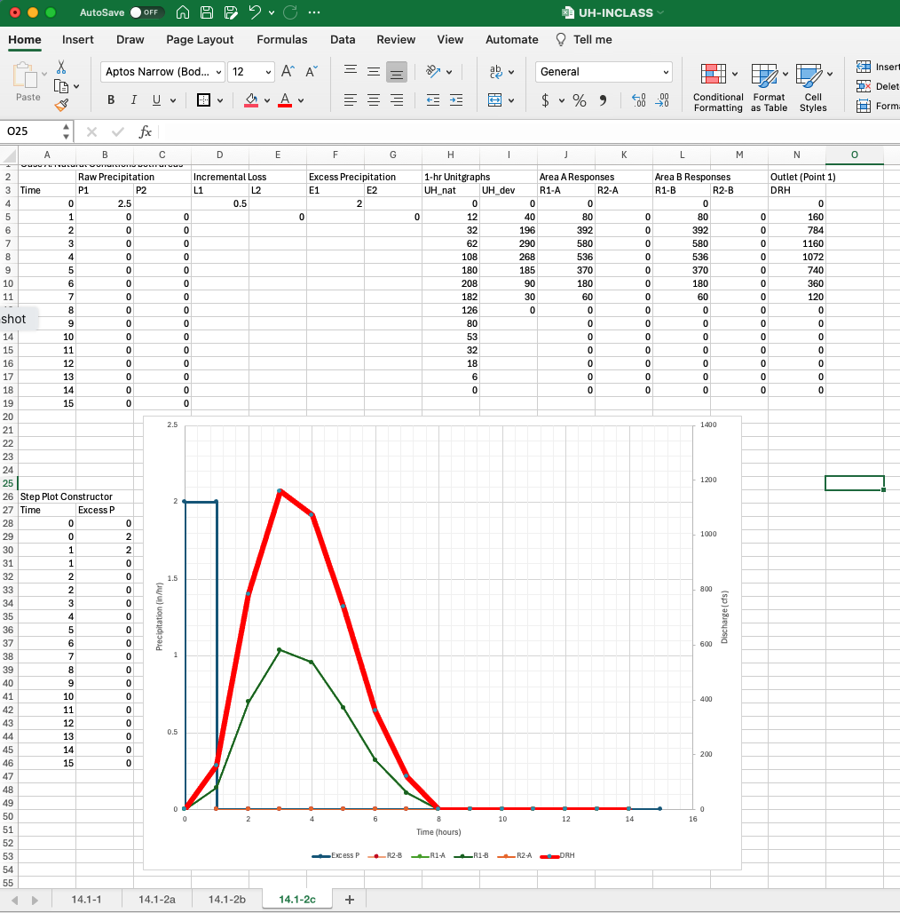

14.1 Unit Hydrograph Applications Exercise(s)¶
Course Website
Readings¶
Videos¶
Spreadsheets¶
Listed below are spreadsheets that implement simple UH examples. They are Excel (circa 2009) spreadsheets, that work in current Excel, LibreOffice, and Numbers environments
Outline¶
Exercise 1 Construct DRH graphically and/or using a spreadsheet
Exercise 2 Construct DRH using spreadsheet for several different conditions
Typical Workflow:
UH is usually for 1-hr excess precipitation. Check the stated duration of the input (not the time base of the hydrograph, thats a different beast)
Is the hyetograph in 1-hr increments?
Yes, proceed to step 3
No, convert supplied hyetograph into equivalent 1-hr increments (or whatever is dictated by the UH), return to beginning step 2
Has the loss function been applied?
Yes, proceed to step 4
No, apply loss function to each hyetograph increment, return to beginning step 3
On suitable chart (or in a spreadsheet, or in a script) plot each increment’s response onto the chart - remember to lag the responses consistent with the increment timing.
Add up the responses for each time of interest (vertical additions if you will). This result is the direct runoff hydrograph (DRH).
Exercise 1¶
Determine the direct runoff hydrograph resulting from the rainfall pattern in Figure P2-2(a) using the triangular 1-hr UH given in Fig. P2-2(b)


Here’s a spreadsheet approach

14.1-Spreadsheet Choose TabSheet 14.1-1
Exercise 2.¶
Consider the watershed below. Area A and B are identical in size, shape, slope, and channel length. 1-hr UH are supplied fro natural and developed conditions for both areas.


Determine:
Assuming natural conditions for both areas determine the outflow at point 1 if 2.5 in.hr of rain falls for 2 hrs. Total loss is 1 in.
Assume area B is fully developed, area A remains au naturel. Determine the outflow at point 1 if 2.0 in/hr of excess rain falls for 1 hrs.
Repeat the above for both areas fully developed.



14.1-Spreadsheet Choose TabSheets 14.1-2(a),(b), or (c)